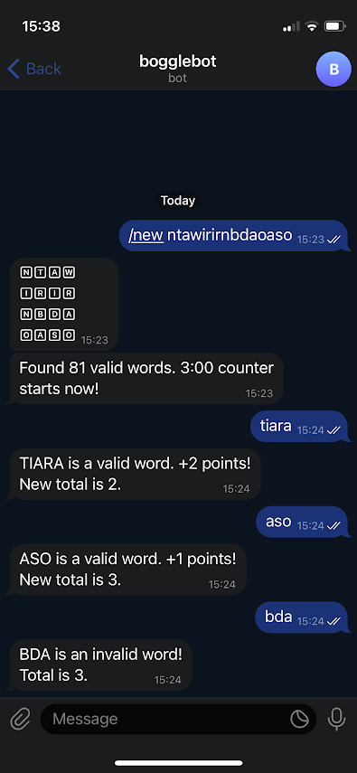

Last week, I had a conversation with a good friend in the spirit of the "Cult of Done" (valuing action over perfection, boldly experimenting and learning through doing) and sharing our work. Based on this conversation, we decided to get our hands dirty and attempt to create a quick and fun project, constraining ourselves to a couple hours of work. Key here is not worrying about perfection, but getting something "out there" quickly.
(On that note, a quick disclaimer: as the goal of this experiment was to move fast, the writing of this blog post is assisted using GPT-4 through the OpenAI API. Everything in italics was written with the help of an LLM using my instructions and provided information.)
My girlfriend and I love playing board games. Recently, we've picked up a copy of Boggle in a thrift shop. Boggle is a word game where you find as many words as you can from 16 dice, each with a different letter, that are shaken in a covered tray and then set in a 4 by 4 grid. You have three minutes to find words that are at least three letters long and each letter in the word has to touch the letter before it in any direction. You can't use the same letter dice more than once in a word. Once time's up, players compare their lists and any word that appears on more than one list gets cancelled out, with players scoring points based on the length of their unique words.
Our second-hand copy of Boggle has a couple of problems, however (excluding the fact that one of the dice was replaced by a Scrabble block by the previous owner):
As I want to create something that both helps solve the problems above, but I also want to get something done quickly, the goal for this project is threefold:
I started with a planning, trying to come up with the necessary sub-tasks:
As I am not that familiar with computer vision and I wanted to move quickly, my first attempt was to use GPT-4V, or gpt-4-vision-preview, to take a picture of the Boggle grid as input and return the letters on the image. If this would have worked out, I could quickly move to the other steps of the project. I used the following prompt:
Given the image of a 4x4 grid of Boggle dice, convert the letters visible on the dice into a continuous 16-character string by reading from left to right, top to bottom. For example, if the top row contains the letters 'A', 'B', 'C', and 'D', and the second row contains the letters 'E', 'F', 'G', and 'H', etc., your output should be 'ABCDEFGH...etc' up to the 16th letter. Keep in mind that letters could be rotated!This failed miserably, however. The received output based on the image was:
The continuous 16-character string from the Boggle dice is "INRAWMNBUDOVSOLO".Afterwards, I lost an hour trying out different things with OpenCV and tesseract, but this did not seem to work out. As I still wanted to move quickly, I skipped this step and will rely on user input for the grid.
The trie is an efficient data structure for storing large word lists. The data structure itself can be seen as a finite state machine that only accepts words used for its creation. Each node of the trie represents a prefix, with the root as an empty string. Transitions between nodes adds characters to the prefixes. This offers quick search capabilities, therefore making it suitable for our project.
As I've recently had to create an implementation of tries for my own work, I simply could reuse it for this project. The idea behind the construction algorithm is very simple: starting from the initial state, we check every symbol in each word. We follow transitions to states if they already exist, and it creates new states and transitions if they don't. At the end of each word, it marks the last state as the final state.
def trie(sequences):
"""Constructs a trie from given sequences."""
fsm = Automaton()
for sequence in sequences:
current = fsm.initial
for symbol in sequence:
if symbol not in fsm.alphabet:
fsm.add_symbol(symbol)
if (next_state := fsm.follow(current, symbol)) is None:
next_state = fsm.add_state()
fsm.set_transition(current, next_state, symbol)
current = next_state
fsm.accepting.add(current)
return fsmFor the dictionary of valid words, I relied on the OpenTaal wordlist, containing over 400k Dutch words. We can shorten this list significantly by filtering out the ones that are impossible to find in Boggle:
In the end, we end up with a large trie that accepts all words from our Dutch wordlist.
If we have a string representing the grid as input (e.g., "NTAWIRIRNBDAOASO"), we can find all possible words by converting our grid into a graph, allowing us to utilize graph traversal algorithms to systematically search for potential word formations. This graph representation simplifies the problem into a more navigable structure where each dice is a vertex, denoted by its character. Edges between vertices are formed based on a dice's spatial relation to its neighbours, indicating possible transitions or movements in our word formation process.
To find all words in the grid, we can perform a depth-first traversal starting from each dice, exploring as far as possible along each branch before backtracking. It is an ideal choice for our case here since we are interested in finding all potential paths that form words. Starting from each dice (or vertex), our DFS traces all unique paths devoid of cycles, while continuously inspecting the trie to confirm whether the traced path is leading to a valid word.. We stop traversing further in a given path if the prefix is not present in the trie. This way, we retrieve all acyclic paths in the graph that have a path in the trie.
A crucial technique incorporated here is early termination, which is possible due to the nature of the trie structure. Once the DFS identifies that the current sequence of characters (or path in the graph) does not correspond to any prefix in the trie, the exploration along that path is immediately halted, effectively pruning futile searches and enhancing computational efficiency.
Using the above, we can create a Telegram bot that uses the above to confirm our words and to keep track of our scores.
Users input their Boggle game board as a grid by invoking the "/new" command in a chat with the bot, and the bot generates a list of all possible words by simulating all possible paths in the grid. The bot will then confirm the start and the counter of the game. During the game, the users type in the words they find, and the bot checks if the word is valid (i.e., is in the list of possible words). If the word is valid, the user's score is incremented according to the length of the word. The score and game updates are sent back to the user in the chat. The bot is built using python-telegram-bot library, which allows easy interaction with the Telegram Bot API.
Given the flexibility of this set-up, there are various ways we could extend this project in the future:
Wordlist Variants: Depending on our mood or the challenge we desire, we could spice up our games by introducing different wordlists for specific themes. For example, a game could be based solely on palindromes, or we could introduce a Flemish dialect-based wordlist. The possibilities and variations are endless, making each game a fresh and exciting challenge.
Custom Time Counter: A part of the thrill of Boggle comes from the time pressure. We could experiment with this element by introducing a varying time or perhaps even a countdown whereby the time decreases each round, raising the stakes progressively.
Automatic Scoring: One of the main appeals of this project is that it removes the cumbersome task of manual point counting. This could be further extended to automatically keep track of our scores across multiple games or even different days. Thus, we could concentrate on the game at hand, while the bot takes care of the statistics and progress tracking.
Speed Chess Inspired Mode: Perhaps one of the most exciting possibilities would be to create a 'speed chess' inspired mode. Each player could have an individual clock, and you'd need to quickly spot and share a unique word to pause your countdown and switch turns. The game would then continue until someone's time reaches zero. This offers the perfect blend of frantic quick-thinking, strategy, and suspense - a true test of one's Boggle skills!
In the spirit of the "Cult of Done", I have focused on the getting this project up and running first, before worrying about enhancements or delivering the perfect project.